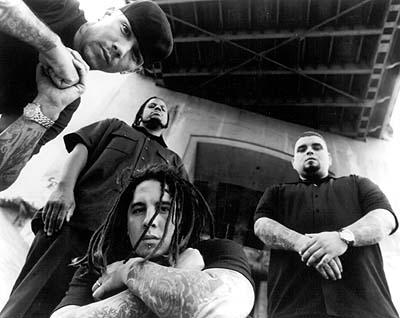

Payable on Death (stylized as P.O.D.) is an American Christian Metal band formed in 1992. The band's line-up consists of vocalist Sonny Sandoval, drummer Wuv Bernardo, guitarist Marcos Curiel, and bassist Traa Daniels. Their Christian faith is an important part of their music.
They have released seven studio albums and have sold over 10 million records worldwide. Over the course of their career, the band have also received three Grammy Awar dnominations, contributed to numerous motion picture soundtracks and toured internationally. With their third studio album, The Fundamental Elements of Southtown, they achieved their initial mainstream success; the album was certified Platinum by the RIAA in 2000. Their following studio album, Satellite, continued the band's success with the hit singles, "Alive" and "Youth of the Nation", pushing it to go triple platinum.